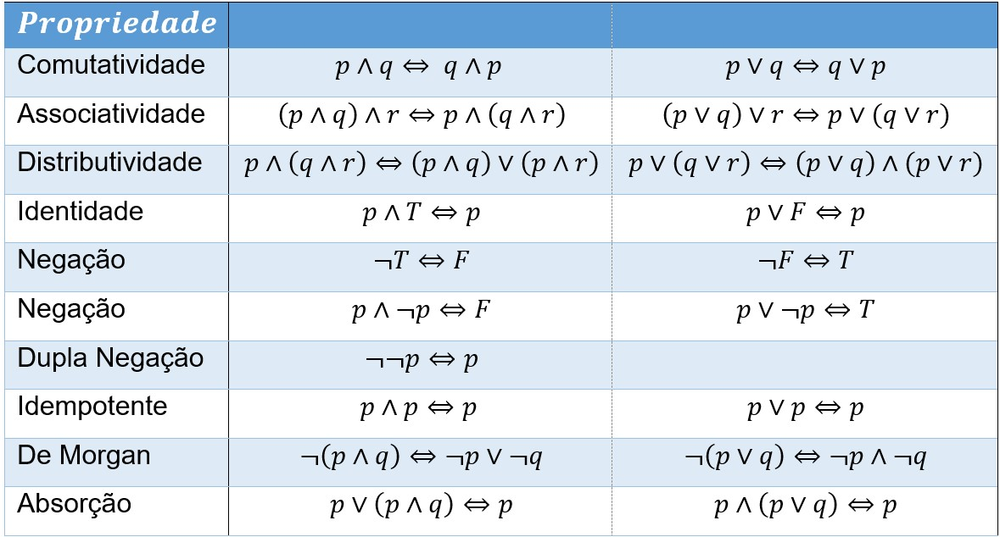
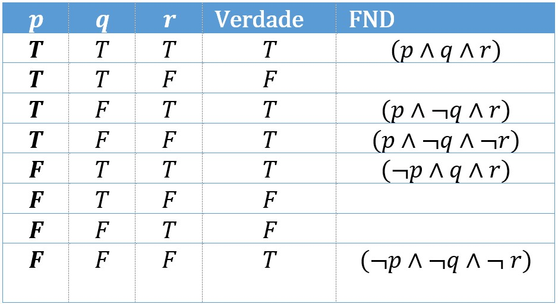
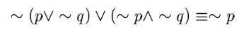
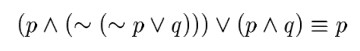

Classificação de Fórmulas e Inferência
Tautologia
Palavra de origem grega que significava: repetindo o que já foi dito;
Usamos a palavra tautologia para indicar fórmulas onde todas as interpretações são verdadeiras.
Verifique se $(A \rightarrow B)\leftrightarrow(\neg B \rightarrow \neg A)$ é uma Tautologia.
$(P \rightarrow Q)\leftrightarrow(\neg Q \rightarrow \neg P)$
| $P$ | $Q$ | $(P \rightarrow Q)$ | $(\neg Q)$ | $( \neg P)$ | $(\neg Q \rightarrow \neg P)$ | $(P \rightarrow Q)\leftrightarrow(\neg Q \rightarrow \neg P)$ |
|---|---|---|---|---|---|---|
| $T$ | $T$ | $F$ | $F$ | |||
| $T$ | $F$ | $T$ | $F$ | |||
| $F$ | $T$ | $F$ | $T$ | |||
| $F$ | $F$ | $T$ | $T$ |
Contradição e Contingência
Usamos a palavra contradição para indicar fórmulas que são falsas em todas as interpretações.
A contradição é o oposto da tautologia.
Se a formula não for verdadeira em todas as interpretações, nem falsa em todas as interpretações ela é chamada de contingência.
Consistência e inconsistência
Se a fórmula é falsa em uma determinada interpretação $i$ então a fórmula é falsa segundo $i$. Caso contrário dizemos: a fórmula é verdaderia segundo $i$.
Formulas verdadeiras em algum $i$ são contingentes ou satisfatíveis. Se a fórmula não for verdadeira em algum $i$ ela será insatisfatível, ou contraditória.
Uma fórmula é válida se for tautológica.
Equivalência
Dizemos que a fórmula $P$ e equivalente a fórmula $Q$ se, e somente se, cada valor lógico verdadeiro, $V(P)\equiv T$, que satisfaz $P$ também satisfaz $Q$ e cada valor lógico verdadeiro, $V(Q)\equiv T$, que satisfaz $Q$ também satisfaz $P$.
Equivalências Notáveis
Forma Normais
Podemos representar qualquer fórmula bem formatada apenas usando as operações básicas do cálculo proposicional; $\neg, \wedge, \vee, \rightarrow,$
Dizemos que uma determinada proposição $P$ está em uma forma normal se contiver apenas: $\neg, \wedge, \vee$.
Entre as formas normais vamos destacar as formas normais conjuntiva e disjuntiva
Forma Normal Conjuntiva
São ditas conjuntivas as formas que sejam a conjunção de formas disjuntivas. Nas formas normais conjuntivas usamos apenas $\neg, \wedge, \vee$.
As seguintes fórmulas estão de acordo com a Forma Normal Conjuntiva.
- $(\neg q \vee p \vee r) \wedge (\neg p \vee r) \wedge q$
- $(p \vee r) \wedge (\neg p \vee r) \wedge (p \vee \neg r)$
- $p \wedge q$
- $p$
Forma Normal Conjuntiva
- Contém apenas $\neg, \wedge, \vee$.
- Não contém dupla negação $\neg \neg p$.
- A negação não está aplicada a conjunção ou as disjunções $\neg (p \vee q)$.
- Não existem disjunções de conjunções $p \vee (q \wedge r)$.
Forma Normal Conjuntiva
Usamos as propriedades de equivalência tautológica para converter qualquer fórmula na forma normal conjuntiva.
| formula original | $\neg ((p \vee q) \wedge \neg q) \wedge \neg (q \wedge r)) $ |
| usando a negação | $\Leftrightarrow (\neg(p \vee q) \vee \neg \neg q) \wedge (\neg q \vee \neg r) $ |
| convertendo da disjunção | $\Leftrightarrow ((\neg p \wedge \neg q) \vee q) \wedge (\neg q \vee \neg r) $ |
| propriedade distributiva | $\Leftrightarrow (\neg p \vee q) \wedge (\neg q \vee q) \wedge (\neg q \vee \neg r) $ |
| Já que: $(\neg q \vee q) \Leftrightarrow T$ | $\Leftrightarrow (\neg p \vee q) \wedge T \wedge (\neg q \vee \neg r) $ |
| finalmente: | $\Leftrightarrow (\neg p \vee q) \wedge (\neg q \vee \neg r) $ |
Forma Normal disjuntivas
São ditas disjuntivas as formas que sejam a disjunção de formas conjuntivas. Nas formas normais disjuntivas usamos apenas $\neg, \wedge, \vee$.
As seguintes fórmulas estão de acordo com a Forma Normal Disjuntiva.
- $(\neg q \wedge p \wedge r) \vee (\neg p \wedge r) \vee q$
- $(p \wedge r) \vee (\neg p \wedge r) \vee (p \wedge \neg r)$
- $p \vee q$
- $p$
Forma Normal Disjuntiva
- Contém apenas $\neg, \wedge, \vee$.
- Não contém dupla negação $\neg \neg p$.
- A negação não está aplicada a conjunção ou as disjunções $\neg (p \wedge q)$.
- Não existem disjunções de conjunções $p \vee (q \wedge r)$.
Forma Normal Conjuntiva
Resolva o exercício participativo proposto.
Formas Normais e Tabelas Verdades
Para usar uma tabela verdade para criar as formas normais basta lembrar que:
Usamos as interpretações falsas para criar a forma normal conjuntiva.
Usamos as interpretações Verdadeiras para criar a forma normal disjuntiva.
FN Conjuntiva e Tabela Verdade

Para cada interpretação $F$ uma formula disjuntiva equivalente $(F)$.
A forma resultante, a forma normal conjuntiva será a conjunção destas disjunções.
FN Disjuntiva e Tabela Verdade
Para cada interpretação $T$ uma formula conjuntiva equivalente $(T)$.
A forma resultante, a forma normal disjuntiva será a disjunção destas conjunções.
Praticando!
Podemos verificar a veracidade destas técnicas se pegarmos uma função qualquer. Digamos: $ (\neg q \rightarrow p) \rightarrow (p \rightarrow q)$ e aplicar as técnicas de representação usando as tabelas verdades para criar as formas normais, conjuntiva e disjuntiva. E comparar a tabela verdade das três fórmulas.
Vocês tem 30 minutos para testar esta técnica em grupo. Dividam as tarefas e comparem os resultados.
Argumentos
Definiremos formalmente um argumento com sendo toda afirmação de que uma dada seqüência finita de proposições chamada de premissas, dadas por ${P_1, P_2, P_3... P_n}$ para todo $n>=1$, tem como consequência, ou acarreta, uma proposição final $Q$ que chamaremos de conclusão.
$P_1, P_2, P_3... P_n \vDash Q $
Argumentos
$P_1, P_2, P_3... P_n \vDash Q $
Que leremos como:
- $P_1, P_2, P_3... P_n \text{ acarretam } Q $
- $Q \text{ decorre de } P_1, P_2, P_3... P_n $
- $Q \text{ se deduz de } P_1, P_2, P_3... P_n $
- $Q \text{ se infere de } P_1, P_2, P_3... P_n $
e chamaremos de consequência semântica.
Argumentos
No começo da disciplina vimos um argumento especial. Composto de duas premissas e uma conclusão. A este argumento damos o nome de silogismo.
Exercícios
Considerando as formulas a seguir: Prove a equivalência usando as propriedades das formulas e reduza as duas fórmulas as Formas Normais Conjuntivas e Disjuntivas.
 Material de apoio
Você pode baixar o material de apoio clicando aqui
Obras Citadas
AHO, A. V. et al.
Compiladores: princípios, técnicas e ferramentas.
2º. ed. Boston, MA, USA: Pearson Education Inc. , 2007.
CASS, S. The 2016 Top Programming Languages. IEEE
Spectrum, 2016. Disponível em:
http://spectrum.ieee.org/computing/software/the-2016-top-programming-languages.
Acesso em: 22 Set. 2016.